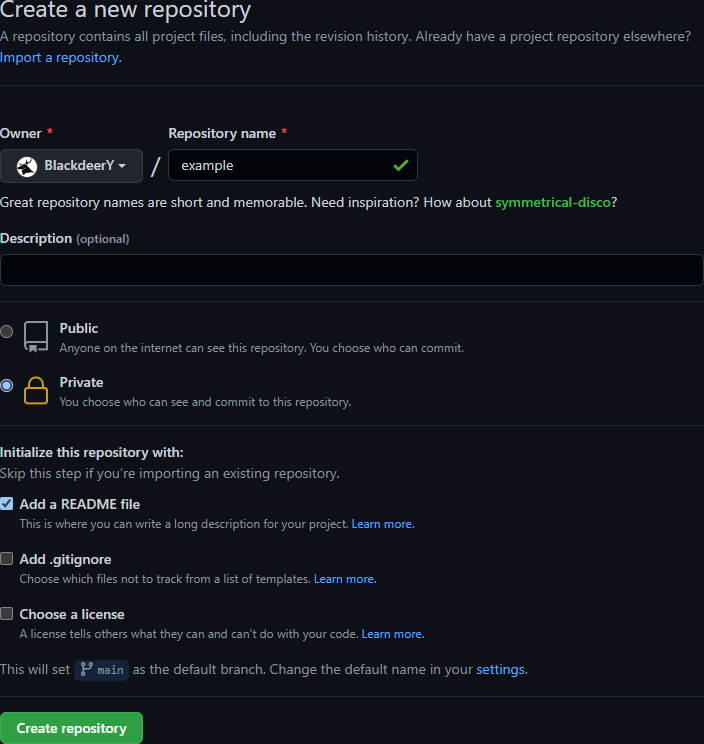
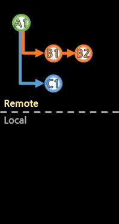

[저장소(Repository) 생성]
원격저장소를 생성한다.
원격저장소를 만드는 방법과 서비스는 여러가지가 있지만,
여기서는 생성을 처음 접하는 초보자를 기준으로 하여
깃헙(GitHub)에 생성하는 법을 간단히 본다.
깃헙(GitHub)에 로그인한 상태에서,
https://github.com/new로 접속한다.

저장소 이름과 공개여부를 설정한다.
Add a README file을 체크하면, README.md 파일을 생성한 커밋을 자동으로 추가해준다.
저장소의 주소를 복사하여 clone하여 사용한다.
